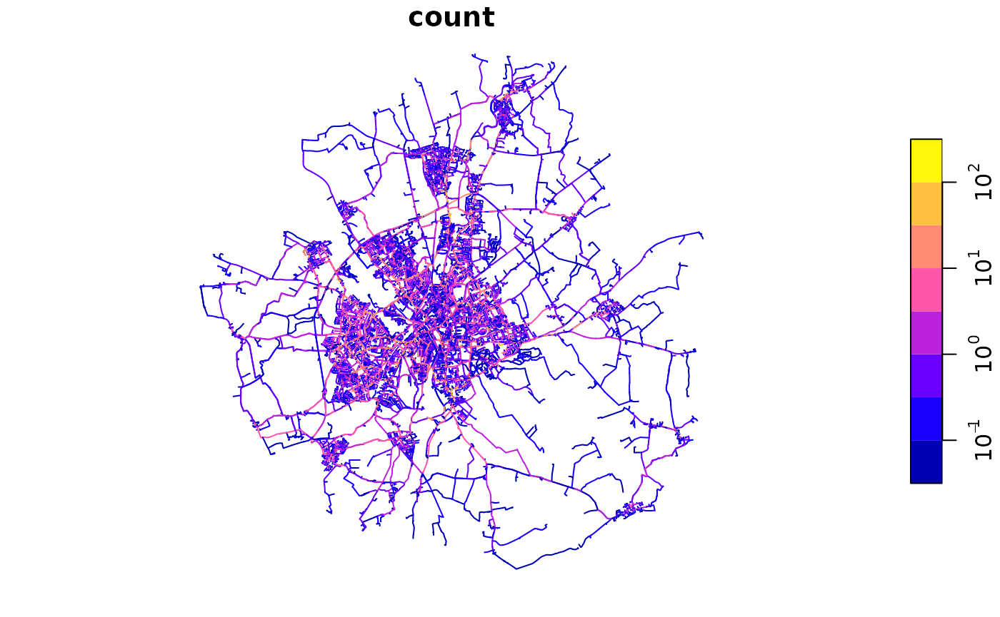

library(sf)
#> Linking to GEOS 3.12.1, GDAL 3.8.4, PROJ 9.4.0; sf_use_s2() is TRUE
library(tidyverse)
#> ── Attaching core tidyverse packages ──────────────────────── tidyverse 2.0.0 ──
#> ✔ dplyr 1.1.4 ✔ readr 2.1.5
#> ✔ forcats 1.0.0 ✔ stringr 1.5.1
#> ✔ ggplot2 3.5.1 ✔ tibble 3.2.1
#> ✔ lubridate 1.9.3 ✔ tidyr 1.3.1
#> ✔ purrr 1.0.2
#> ── Conflicts ────────────────────────────────────────── tidyverse_conflicts() ──
#> ✖ dplyr::filter() masks stats::filter()
#> ✖ dplyr::lag() masks stats::lag()
#> ℹ Use the conflicted package (<http://conflicted.r-lib.org/>) to force all conflicts to become errors
library(tmap)
#> Breaking News: tmap 3.x is retiring. Please test v4, e.g. with
#> remotes::install_github('r-tmap/tmap')
# # Get the datasets, see: https://github.com/acteng/netgen/releases/tag/v0.1.0
# Automate data download if you have gh installed and authorised with:
# theme void:
theme_set(theme_void())
origin_zones = netgen::zones_york
names(origin_zones)
names(origin_zones)[1] = "name"
dir.create("input", showWarnings = FALSE)
sf::write_sf(origin_zones, "input/zones.geojson", delete_dsn = TRUE)
od2net::make_osm(zones_file = "input/zones.geojson")
od2net::make_origins()
# Optionally, get elevation data:
# netgen:::make_elevation()
if (!file.exists("input/elevation.tif")) {
file.copy("../input/.tif", "input/elevation.tif")
}
destinations = netgen::destinations_york # Provided in the R package
names(destinations)[1] = "name"
destinations = destinations[1]
class(destinations$name) = "character"
sf::write_sf(destinations, "input/destinations.geojson", delete_dsn = TRUE)
# Save the OD dataset:
od_geo = sf::read_sf("https://github.com/acteng/netgen/releases/download/v0.1.0/res_output.geojson")
od = od_geo |>
sf::st_drop_geometry() |>
transmute(from = O, to = as.character(D), count = round(trips_modelled))
readr::write_csv(od, "input/od.csv", quote = "all")
readLines("config_pct_govtarget.json") |> cat(sep = "\n")
#> Warning in readLines("config_pct_govtarget.json"): incomplete final line found
#> on 'config_pct_govtarget.json'
#> {
#> "requests": {
#> "description": "Test data for SchoolRoutes project.",
#> "pattern": {
#> "ZoneToPoint": {
#> "zones_path": "zones.geojson",
#> "destinations_path": "destinations.geojson",
#> "csv_path": "od.csv",
#> "origin_zone_centroid_fallback": false
#> }
#> },
#> "origins_path": "buildings.geojson",
#> "destinations_path": "destinations.geojson"
#> },
#> "cost": "Distance",
#> "uptake": "GovTargetPCT",
#> "lts": "BikeOttawa"
#> }
system("od2net config_pct_govtarget.json --rng-seed 42")
list.files("output")
#> [1] "counts.csv" "failed_requests.geojson"
#> [3] "output.geojson" "rnet.pmtiles"
output_file = "output/output.geojson"
rnet_govtarget = sf::read_sf(output_file)
names(rnet_govtarget)
#> [1] "backward_cost" "count" "destination_count"
#> [4] "forward_cost" "length" "lts"
#> [7] "nearby_amenities" "node1" "node2"
#> [10] "origin_count" "osm_tags" "way"
#> [13] "geometry"
plot(rnet_govtarget["count"], logz = TRUE)